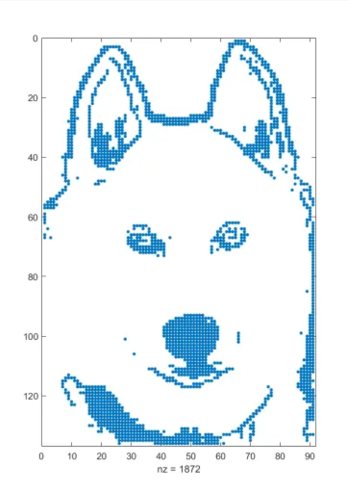
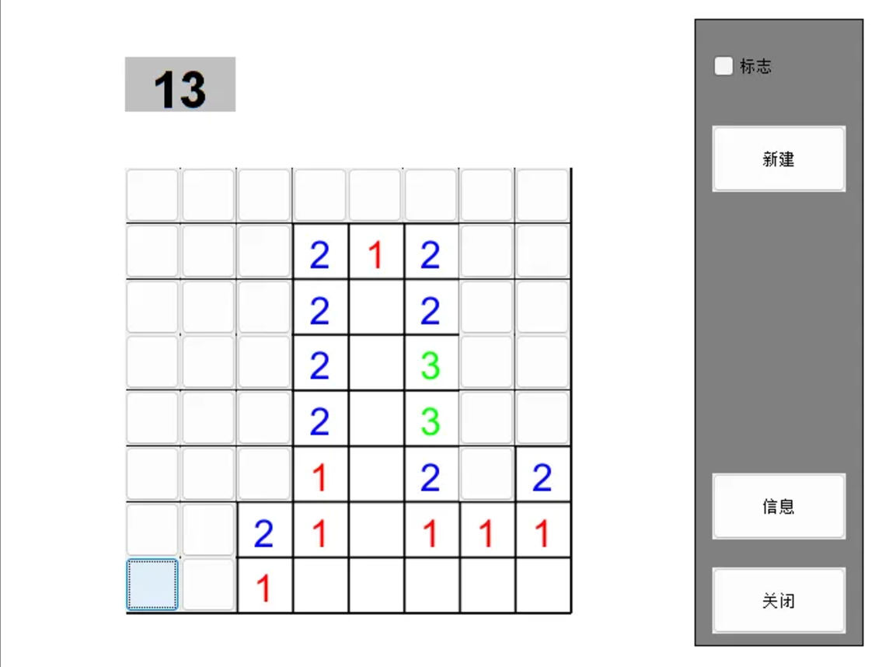
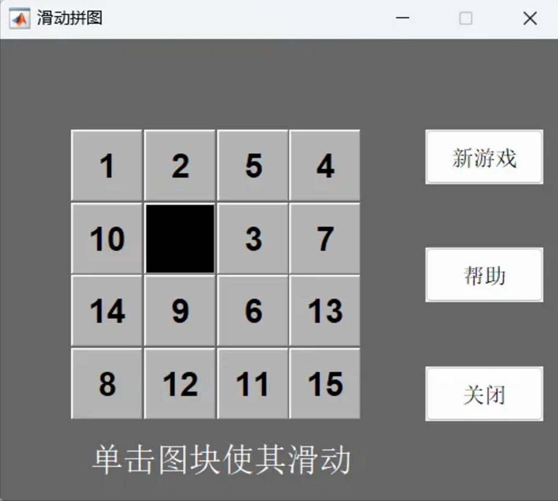
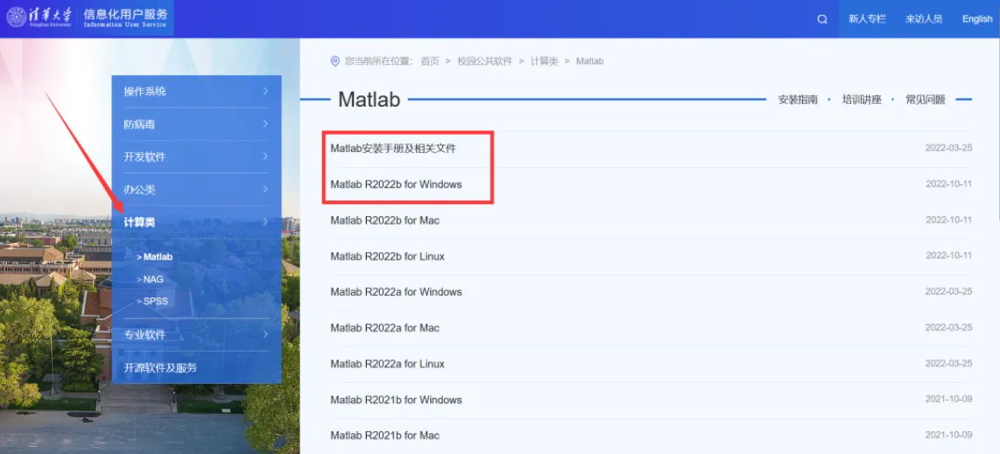
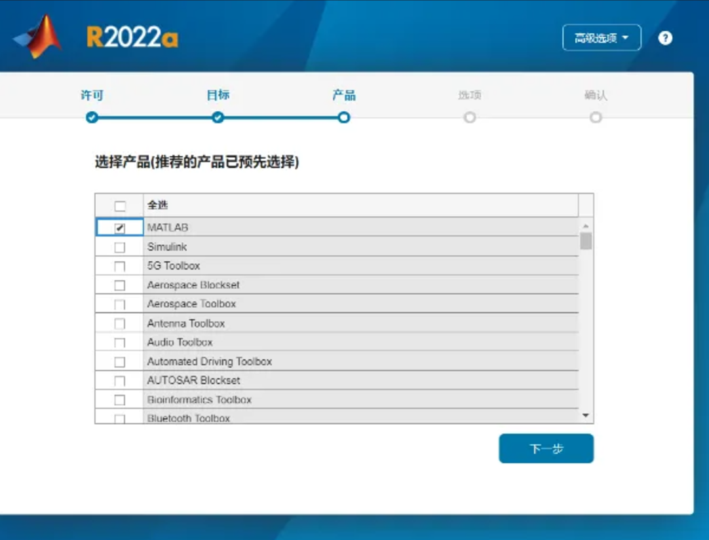
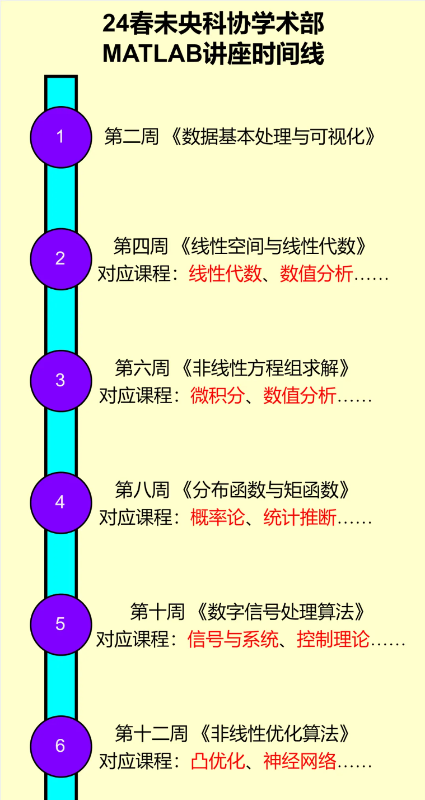

未央科协学术部带着MATLAB系列培训讲座来啦！
在2024年春季学期，未央科协学术部已开展六场MATLAB培训讲座。与以往学术部所办的所有讲座都不同，这一次的MATLAB系列讲座更系统、更丰富，与课程结合更紧密。
针对未央同学共同面临的数理基础课程，学术部在讲座上：
- 阐述数理问题（Problem Clarification）
- 提出解决方案（Solution Proposition）
- 以Matlab实现（Matlab Implementation）
以帮助大家更好地学习和掌握数理基础课程。讲座将从最基础的数理概念，一步步帮你理解解题过程，手把手教你MATLAB的实现方案。今后遇到任何数理问题都不必困扰，因为MATLAB Is All You Need。
01 什么是MATLAB？
一个商业数学软件？一门编程语言？抑或是……一种计算的方式，一种实现算法的方法，一种解决所有与数和计算有关问题的途径……
与未央科协学术部一起，从零入门科学计算，掌握MATLAB从基本操作到应用的通途。
02 MATLAB能整哪些好活？
众所周知一些程序员喜欢埋彩蛋，MATLAB也是这样，在此不妨放出来给大家感受一下MATLAB的魅力。
- spy: 在命令行窗口输入spy直接回车，出现一只doge看着你。
- lorenz: 显示洛伦兹混沌吸引子运动轨迹的小动画程序。
- xpbombs与fifteen: 两个内置小游戏，类似扫雷与华容道。
- travel: 旅行商问题优化程序。



03 安装MATLAB
点击下面的链接进入学校软件资源下载（当然也可以在info上找到这个入口），MATLAB在计算类软件中。点击第一个“Matlab安装手册及相关文件”和你的电脑系统对应的版本。至于版本，建议选择2021a以后的（其中“a”“b”表示上半年、下半年版本，随意挑一个就好啦）。安装过程中会提示需要哪些插件，本推送中的功能只需要MATLAB即可实现，其他后续需要也可以后续安装。
清华MATLAB下载链接：


04 课程安排
未央科协学术部已在2024春季学期开展6场讲座，主要以微积分与线性代数为数学基础，涉及数值计算、概率统计、优化与深度学习等知识（这些知识我们会以浅显易懂的方式介绍），并结合MATLAB的使用，解决一些实际问题。

相关课程推送及简介: